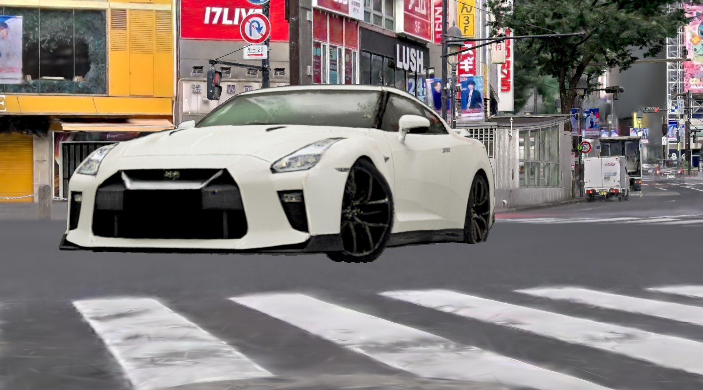
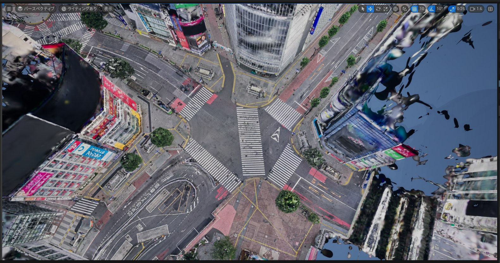
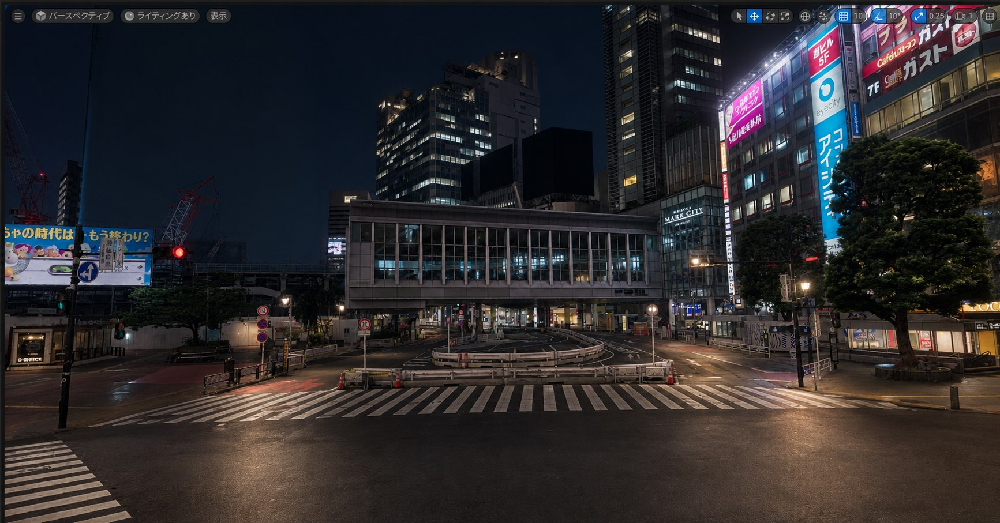
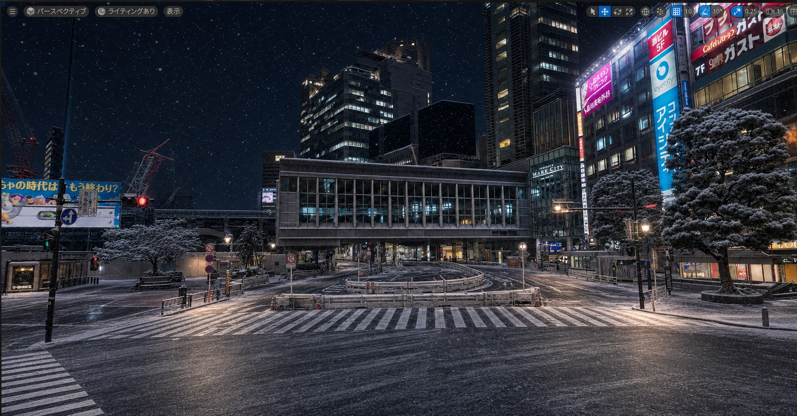
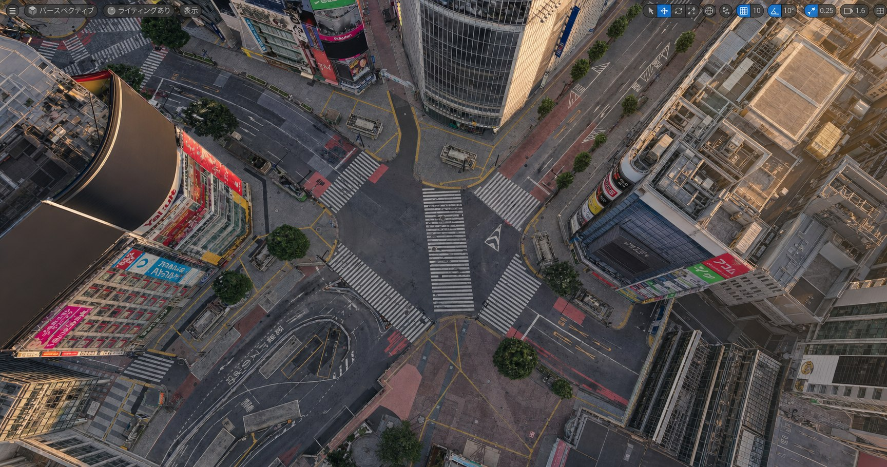
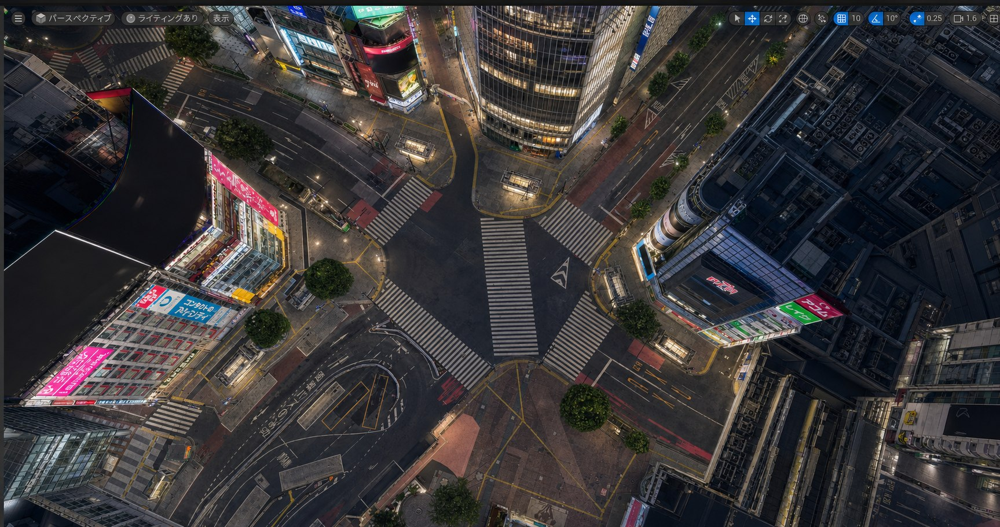
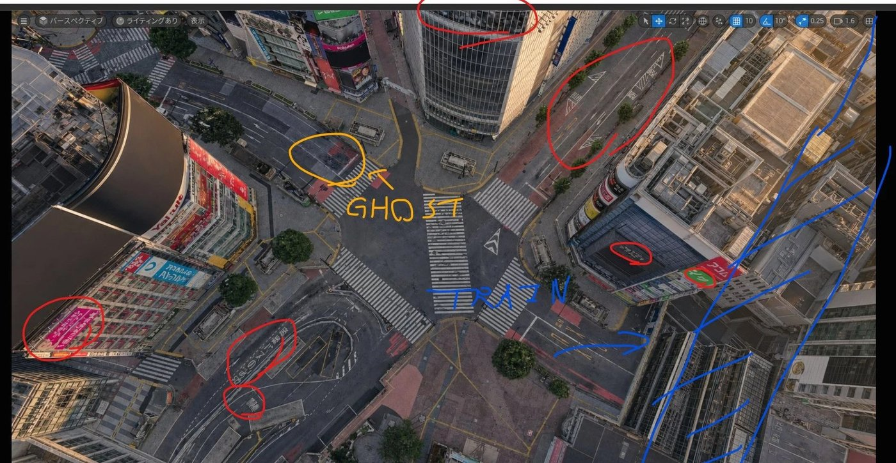

01 なぜ3DGSをUE5に持ち込むのか
私はロケハン3Dで、都市部を中心にした3DGSスキャンデータを制作・販売しています。3DGSはビューアーで眺めるだけでも十分に使えますが、映像制作の素材として本気で使うなら、UE5に取り込むことで一段階上の自由度が手に入ります。具体的には、次のことができるようになります。
- 物理的に立てない位置にカメラを置く ── ビルの真上、道路の上空、駅の直上。現実には撮影許可が下りない画角も、スキャンデータの中では自由です。
- 高解像度スチル・動画としての書き出し ── ビューポートで確定した画角を、そのまま素材として出力できます。
- VFX加工の下準備 ── メッシュアセットとの合成、ライティング調整、AIリライトの元画像づくりまで、1つのシーンの中で完結します。

画像制作：シニアVFXアーティスト hectorVFX 氏（ロケハン3Dの渋谷データを使用）
なお、出力した素材を空撮プレートとして仕上げる工程は別の解説記事で扱う予定なので、この記事は「UE5との連携」と「素材出力」の部分に絞って書きます。使うプラグインはXGRIDsのLCC Plugin for UE（無料）です。
02 XGRIDs「LCC Plugin for UE」とは（ダウンロード先）
LCC Plugin for UEは、XGRIDsが公式配布しているUE5向けの3DGSプラグインです。3DGSシーンの読み込み・描画・編集・リライトまでを1つのプラグインで担います。私がこれを使っている理由は主に2つで、都市規模のスキャンを一括で扱えるスケール（ストリーミングLoDで数十億点規模まで対応）と、LCC2という圧縮フォーマットの存在です。渋谷のような大規模シーンでも、PLYで持ち回すよりファイルが大幅に軽く、読み込みが安定します。
- 対応エンジン
- Unreal Engine 5.1〜5.8（Windows / Linux、DirectX 11・12 / Vulkan）
- 対応フォーマット
- LCC2 / LCC / PLY / SOG / SPZ。PostshotやLuma、Polycamなどが書き出す標準的な3DGS PLYもそのまま読めます
- スケール
- 点数無制限。ストリーミングLoDにより大規模シーンでもフレームレートを維持
- 料金
- Free＋Pro の2ティア。Proは現在期間限定で無料（プロキシメッシュ・リライト、セルフシャドウ、ACES/OCIOカラーパイプラインなどが追加）
- 使い方
- Blueprintベースでコード不要。C++ APIでのランタイム制御にも対応
LCC Plugin for UE（プラグイン本体・サンプルデータ）
プラグイン本体は、XGRIDsの開発者ポータルからUEバージョン別のzipとして入手できます。サンプルデータも同じページにあります。
https://developer.xgrids.com/#/download?page=LCC_UNREAL_SDK_UE54
ダウンロードページを開く →03 インストール手順
導入はUE5の標準的なプラグイン追加の流れそのままです。私はUE5.5のプロジェクトに LCC4Unreal-v3.0.0-win-UE5_5 を入れています。
- 上のダウンロードページから、使っているUEバージョンに合ったzipを入手します。バージョン違いはロードエラーの元になるので、ここだけは正確に合わせます。
- zipを解凍し、プロジェクト直下の
Pluginsフォルダに配置します（フォルダがなければ作成します）。全プロジェクトで共通利用したい場合は、エンジン側のEngine/Pluginsに置くこともできます。 - プロジェクトを起動し、編集 → プラグイン で「LCC」を検索して有効化します。エディタの再起動を求められるので、そのまま再起動します。
- 再起動後、プラグインのファイル選択ダイアログから .lcc / .lcc2 / .ply を読み込むことで、3DGSシーンがレベルに配置されます。
04 3DGSを読み込み、仮想カメラで素材を出力する
読み込みが終われば、あとはUE5の標準操作です。パースペクティブビューでカメラを動かし、狙った画角を作ります。渋谷スクランブル交差点の場合、駅直上からの真俯瞰はドローン飛行禁止区域のため現実には撮影できませんが、スキャンデータの中では制約がありません。地上を歩いて集めた実スキャンを土台に、カメラだけを物理法則から解放するのがこのワークフローの核です。

画角が決まったら、素材として書き出します。スチルなら高解像度スクリーンショット（HighResShot）で解像度を指定して出力することで、そのまま合成・レタッチに回せる静止画になります。動画素材が必要な場合は、シーケンサーでカメラアニメーションを組むことで、カメラワーク付きのショットとしてレンダリングできます。
05 AIでライティング・季節を変える
UE5から出力したスチルを画像生成AIに渡し、「夜にして」「雪を降らせて」といった短いプロンプトだけでライティングと季節を差し替えます。構図・カメラアングル・建物の配置はUE5側（＝実スキャン）で確定済みなので、AIに任せるのは光と空気感の作り込みだけで済みます。指示が短いほど構図が保たれやすく、この役割分担がいちばん破綻が少ないです。




06 現状の限界：看板・文字・人工物は崩れる
条件付きの手法であることも正直に書いておきます。看板の文字や、電車・標識のような細かい人工物は、現状のAI補完では崩れます。存在しないはずの構造物が現れる「ゴースト」や、本来ない場所に電車状の構造が生成される破綻が起きます。

私はここを「プロの仕事の領域」だと考えています。崩れやすい箇所はあらかじめ再撮影・手直し前提で設計することで、世に出せるクオリティまで持っていけます。AI補完の精度そのものは、今後の向上に期待です。
07 3DGSを扱える既存3DCGソフト比較
ゲームエンジンだけでなく、普段のVFXパイプラインで使っている3DCGソフト側でも、3DGSはそのまま扱えるようになってきています。「どこまでをDCCでやり、どこからをUE5でやるか」を決めるうえで、主要ソフトの対応状況を整理しておきます。
| ソフト | 3DGS対応 | 得意 | 不得意 |
|---|---|---|---|
| Houdini 22 | ネイティブ対応 | スプラットを通常のジオメトリ（点群）と同様に扱え、Bone Deform等の標準ノードでそのまま変形・アニメーションできる。Karmaでの直接レンダリングやCopernicus上でのリライトまで対応し、プロシージャルな加工の自由度は最強クラス | ライセンス費用と習得コストが高い。「まず表示したい」だけなら過剰装備 |
| Blender | アドオン経由 | KIRI Engine製「3DGS Render」などの無料アドオンで読み込み・編集・レンダリングまで無料で始められる | アドオン依存で機能・品質にばらつきがある。大規模スプラットでは動作が重い |
| 3ds Max | V-Ray 7で対応 | V-Ray 7がGaussian Splatの直接レンダリングに対応。既存のV-Ray中心のパイプライン（建築ビジュアライズ等）に自然に組み込める | V-Rayライセンス前提。スプラットの編集機能は限定的 |
| Cinema 4D | レンダラー経由 | Octaneなどサードパーティレンダラーの3DGS対応を使ってレンダリングできる。カメラワークづくり・モーショングラフィックスとの相性が良い | C4D標準機能ではなくレンダラー依存。対応状況はレンダラーのバージョン次第 |
私の使い分けは、都市規模のシーンを丸ごと歩き回って画角を探すのはUE5、カット単位の絵作り・レンダリングはDCC側です。実際、空撮カットの制作ではC4D→Octaneのフローを使っていて、その手順は3DGSから「空撮カット」を生成する方法で詳しく解説しています。Houdiniでのスプラット加工については、hectorVFX氏が渋谷データで実証したHoudini 22 × ComfyUI ハイブリッドワークフローの記事で詳しく紹介しています。
08 UE5でリライトまでできる3DGSプラグイン
UE5に3DGSを「表示するだけ」のプラグインなら、無料・OSSを含めて数多くあります（XScene-UEPlugin、MLSLabs GS Renderer、NanoGSなど）。ただ、この記事のように素材出力まで考えると、実務の分かれ目は「読み込んだスプラットのライティングを変えられるか」です。そこで、リライトに対応しているものに絞って紹介します。
| プラグイン | 料金 | リライト | 得意 | 注意点 |
|---|---|---|---|---|
| LCC Plugin for UE （XGRIDs・本記事で使用） | 無料＋Pro | 基本リライト＝無料版。プロキシメッシュ・リライト＋セルフシャドウ＝Pro | 数十億点規模のストリーミングLoDとLCC2圧縮で、都市丸ごとの巨大シーンに最も強い。PLY/SOG/SPZも読める | Proは現在期間限定無料。将来の料金体系は要確認 |
| Volinga Plugin | 無料版＋Pro | 無料版＝シーンライトと干渉するadditiveライティング。Pro＝プロキシメッシュ・リライト（ジオメトリ・影・マテリアルを再現） | バーチャルプロダクションの本線向け。マルチGPU＋nDisplay、ACES/HDR、disguise連携。PLYと独自NVOL形式を読める | Pro機能は有料。LEDウォール等のVP用途に最適化された設計 |
| Luma AI UE Plugin | 無料 | アナリティカルライト・サンライトでのリライトに対応 | Lumaで撮ったデータをそのままUEへ。クロップ・カリング・マージまで無料で完結 | リライトは直接光のみでエミッシブ非対応。対応エンジンはUE5.1〜5.3 |
3つに共通する注意点として、スプラットの描画はUnrealのコアレンダラーの隣に置かれた独自パイプラインで行われるため、スプラットはLumenのグローバルイルミネーションには参加しません。リライトはどのプラグインでも「プロキシメッシュ（スプラットに沿わせた簡易ジオメトリ）」を介して影や光の当たりを再現する方式が主流です。そのうえで私がXGRIDs SDKを軸にしている理由は、リライト対応と都市1エリアを丸ごと1シーンとして扱えるLCC2の設計が両立しているからです。
09 まとめ
この記事の流れをまとめると、3DGSスキャンをLCC Plugin for UEでUE5に取り込み、仮想カメラで画角を確定し、スチル・動画として出力し、AIで光と季節だけを差し替える、という一本道です。いちばんのポイントは、すべてをAIに生成させず、必ず実スキャンのCGを経由させること。構図と正確性はスキャンデータと仮想カメラで担保し、AIには仕上げだけを任せる。この役割分担があるからこそ、破綻を抑えながら「撮れない画」を実用レベルで出せます。
UE5連携やVFX素材としての3DGS活用に興味のある方は、お気軽にお問い合わせください。
この記事で使っている渋谷スクランブル交差点の3DGSデータは、
ロケハン3Dのオンライン版で購入・閲覧できます
PLY／OBJ形式（3DGSウォークスルー付き）で提供。スタンダードライセンス ¥200,000〜（商用・非商用利用可）。同じデータでUE5×AIのワークフローを試してみたい方は、ぜひご覧ください。
物件データを見る →